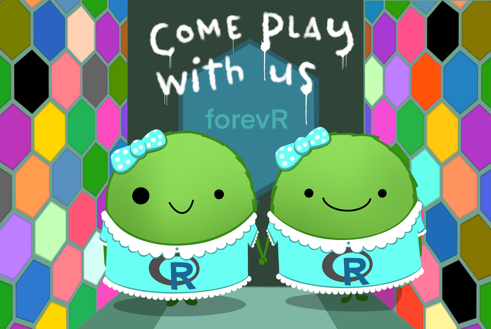

While teaching for many years with Mike Whitlock’s and Dolph Schluter’s excellent book Whitlock & Schluter (2020), I began to develop my own view on how to teach modern biological statistics. Students liked my slides and lecture notes, but found it hard to refer to them in future applied stats problems. I therefore decided to keep supplemental notes in an online book to supplement Whitlock & Schluter (2020). Over years of effort, these notes became more organized, and I replaced my initial textbook – not because it was bad (it is great, actually) but it was nice to have an entire course in my style. I slowly developed a strong vision for this book as I worked through this material in the 1st 2nd, and 3rd editions.
While these early editions had their share of issues: strange rendering, typos, last-minute updates, 2am writing sessions, etc. On the whole there were numerous advantages compared to a traditional textbook. Namely: (1) My class presentation and the textbook presentation almost always agreed, (2) Because I wrote and updated as I went, the book could be rapidly updated / changed to reflect student needs / interests / timelines / current events etc. (3) I could integrate practice problems / YouTube links / and even additional readings pretty easily. (4) It was free for students.
I think all of these benefits were great, and helped a lot, so I am doing it again. This time I’m bringing in my research collaboration with Dave Moeller on speciation in Clarkia xantiana as a theme through this book. I am also aiming for a more stable and professional product.

Learning in this era
I know you’re dealing with a lot. Every year students are dealing with a lot – from jobs, to supporting family, and all the other challenges of modern college life. Yet, we are all trying to make the most of life in this era. We want to teach, learn, and grow.
Moreover, I believe this content is increasingly important – statistics is obsessed with the critical evaluation of claims in the face of data, and is therefore particularly useful in uncertain times. Given this focus, and given that you all have different energies, motivations and backgrounds, I am restructuring this course slightly from previous years. The biggest change is a continued de-emphasis on math and programming – that doesn’t mean I’m eliminating these features, but rather that I am streamlining the required math and programming to what I believe are the essentials. For those who want more mathematical and/or computational details (either because you want to push yourself or you need this to make sense of things), I am including a bunch of optional content and support. I am also wrestling with the impact of LLMs in our education (more below).
I love teaching this course
The content is very important to me. I also care deeply about you. I want to make sure you get all you can / all you need from this course, while recognizing the many challenges we are all facing. One tangible thing I leave you with is this book, which I hope you find useful as you go on in your life. Another thing I leave you with is my concern for your well-being and understanding – please contact me with any suggestions about the pace, content, or structure of this course and/or any life updates which may change how and when you can complete the work.
Course philosophy / goals
My motivating goal for this course is to empower you to produce, present, and critically evaluate statistical evidence — especially as applied to biological topics. You should know that statistical models are only models and that models are imperfect abstractions of reality. You should be able to think about how a biological question could be formulated as a statistical question, present graphs which show how data speak to this question, be aware of any shortcomings of that model, and how statistical analysis of a data set can be brought back into our biological discussion.
“By the end of this course…
Students should be statistical thinkers.
Students will recognize that data are comprised of observations that partially reflect chance sampling, & that a major goal of statistics is to incorporate this idea of chance into our interpretation of observations. Thinking this way can be challenging because it is a fundamentally new way to think about the world. Once this is mastered, much of the material follows naturally. Until then, it’s more confusing.
Students should think about probability quantitatively.
That chance influences observations is CRITICAL to statistics (see above). Quantitatively translating these probabilities into distributions and associated statistical tests allows for mastery of the topic.
Students should recognize how bias can influence our results.
Not only are results influenced by chance, but factors outside of our focus can also drive results. Identifying subtle biases and non-independence is key to conducting and interpreting statistics.
Students should become familiar with standard statistical tools / approaches and when to use them.
Recognize how bias can influence our results. What is the difference between Bayesian and frequentist thinking? How can data be visualized effectively? What is the difference between statistical and real-world significance? How do we responsibly present/ interpret statistical results? We will grapple with & answer these questions over the term.
Students should have familiarity with foundational statistical values and concepts.
Students will gain an intuitive feel for the meaning of stats words like variance, standard error, p-value, t-statistic, and F-statistic, and will be able to read and interpret graphs, and how to translate linear models into sentences.
Students should be able to conduct the entire process of data analysis in R.
Students will be able to utilize the statistical language, R, to summarize, analyze, and combine data to make appropriate visualizations and to conduct appropriate statistical tests.
R, RStudio, and the tidyverse

We will be using R (version 4.4.0 or above.) in this course, in the RStudio environment. My goal is to have you empowered to make figures, run analyses, and be well positioned for future work in R, with as much fun and as little pain as possible. RStudio is an environment and the tidyverse is a set of R packages that makes R’s powers more accessible without the need to learn a bunch of computer programming.
Some of you might have experience with R and some may not. Some of this experience might be in tidyverse or not. There will be ups and downs — the frustration of not understanding and/or it not working and the joy of small successes. Remember to be patient, forgiving and kind to yourself, your peers, and me. Ask for help from the internet, your favorite LLM, your friends, your TAs, and your professor.
R Installation
Before you can use R you must download and install it.\(^*\) So, to get started, download R from CRAN, and follow the associated installation instructions (see below for detailed instructions for your system).
R online via posit cloud. This is a “freemium” service and the free plan is unlikely to meet your needs.If you want a walk through, see Roger Peng’s tutorial on installing R on a PC youtube link here.
“To install R on Windows, click the Download R for Windows link. Then click the base link. Next, click the first link at the top of the new page. This link should say something like Download R 4.4.2 for Windows except the 4.4.2 will be replaced by the most current version of R. The link downloads an installer program, which installs the most up-to-date version of R for Windows. Run this program and step through the installation wizard that appears. The wizard will install R into your program files folders and place a shortcut in your Start menu. Note that you’ll need to have all of the appropriate administration privileges to install new software on your machine.”
- From Appendix A of Hands-On Programming With R – Grolemund (2014).
If you want a walk through, see Roger Peng’s tutorial on installing R on a mac].
“To install R on a Mac, click the Download R for macOS link. Next, click on the [newest package link compatible with your computer]. An installer will download to guide you through the installation process, which is very easy. The installer lets you customize your installation, but the defaults will be suitable for most users. I’ve never found a reason to change them. If your computer requires a password before installing new programs, you’ll need it here.”
- From Appendix A of Hands-On Programming With R – Grolemund (2014).
R comes pre-installed on many Linux systems, but you’ll want the newest version of R if yours is out of date. The CRAN website provides files to build R from source on [Debian], Redhat, SUSE, and Ubuntu systems under the link “Download R for Linux.” Click the link and then follow the directory trail to the version of Linux you wish to install on. The exact installation procedure will vary depending on the Linux system you use. CRAN guides the process by grouping each set of source files with documentation or README files that explain how to install on your system.
- From Appendix A of Hands-On Programming With R – Grolemund (2014).
After installing R download/update RStudio from here.
Alternatively you can simply join the course via RStudioCloud. This could be desirable if you do not want to or have trouble doing this.
What is this ‘book’ and how will we use it?
A fantastic feature of this book is that it does not stand alone. It is neither the entirety of the course content, nor is it all my idea. In addition from lifting from a few other courses online (with attribution), I also make heavy use of these texts:
The Analysis of Biological Data Third Edition (Whitlock & Schluter, 2020): I taught with this book for years. It is fantastic and shaped how I think about teaching Biostats. It has many useful resources available online. The writing is great, as are the examples. Most of my material originates here (although I occasionally do things a bit differently). Buy the latest edition.
Calling Bullshit (Bergstrom & West, 2020): This book is not technical, but points to the big picture concerns of statisticians. It is very practical and well written. I will occasionally assign readings from this book, and/or point you to videos on their website. All readings will be made available for you, but you might want to buy a physical copy.
Fundamentals of Data Visualization (Wilke, 2019): This book is free online, and is very helpful for thinking about graphing data. In my view, graphing is among the most important skills in statistical reasoning, so I reference it regularly.
R for Data Science (Grolemund & Wickham, 2018): This book is free online, and is very helpful for doing the sorts of things we do in R regularly. This is a great resource.
The storytelling with data podcast is a fantastic data viz podcast. Be sure to check out Cole Nussbaumer Knaflic’s books too!
How will this term work / look?
- Prep for ‘class’. This class is flipped with asynchronous content delivery and synchronous meetings.
- Be sure to look over the assigned readings and/or videos, and complete the short low-stakes homework BEFORE each course.
- During class time, I will address questions make announcements, and get you started on in-class work. The TA & I will bounce around your breakout rooms to provide help and check-in. If you cannot make the class, you could do this on your own time without help, but we do not recommend this as a class strategy.
- The help of your classmates and the environment they create is one of the best parts of this class. Help each other.
- In addition to low stakes work before and in class, there will be a few more intense assignments, some collaborative projects, some in class exams, and a summative project as the term ends.
The Use of Large Language Models
We are in the early days of a truly disruptive technology. Large Language Models (LLMs) like ChatGPT and Claude are transforming how we work and learn. While the impact of these tools on future employment, expertise, and citizenry is yet to be settled, it seems clear that no one will hire you to copy and paste AI-generated output. At the same time, no one will hire you to ignore this technology. Success lies in learning how to critically evaluate and work with LLMs—to validate their output, improve your own understanding, and create high-quality results. Subject-level expertise, in conjunction with strong skills in working with AI, will be essential for the foreseeable future.
You can use LLMs to learn things or avoid learning things. Choose wisely.
Learning from AI and having it help you solve problems will allow you all to do better and learn more than people have been able to do previously. Using AI to avoid learning – e.g. having it write or code for you without you thinking/learning will always come back to bite you in the ass.
While you are ultimately in charge of your learning, I will provide plenty of opportunities for in-class, computer-free efforts to show your mastery of the subject. I will also provide guidance on individual assignments about the appropriate use of AI to help maximize the impact of the assignment on your learning.
The path through the term
I start by assuming you know nothing about R or statistics to start (I know this assumption is wrong – many of you all know a lot!). From this humble beginning I aim to leave you with the skills to conduct standard statistical analyses, and the understanding of statistics and the ability to go beyond what we have learned. We take the following path in Figure 1, below:
Acknowledgements
Students
First and foremost, I would like to thank the more than 500 students who have taken my Applied Biostatistics course. Students provide the most important feedback on whether a particular pedagogical approach is effective. While not every experiment succeeds, I am incredibly grateful to each student who has helped me learn what works and what doesn’t as they engaged with the material.
Teaching Assistants (TAs)
I have been fortunate to work with outstanding graduate teaching assistants over the past ten years:
Derek Nedveck: Derek played a key role in helping me establish the course during its early years.
German Vargas Gutierrez: A highly skilled statistician, German’s assistance was invaluable in refining the course a few years into its development.
Chaochih Liu: A brilliant programmer, Chaochih contributed greatly to the course’s organization and structure.
Husain Agha: Husain has remarkable insights into statistics, genetics, and teaching. My work has greatly benefited from bouncing ideas off him.
Brooke Kern: Brooke was not only an exceptional TA but also a valuable collaborator. Much of the data in this book is drawn from her dissertation research.
Collaborators
Brooke Kern, Dave Moeller and Shelley Sianta have generated much of the data in this book and have been patient with my delays in turning around our research during teaching times. Dave also provided nearly every picture in this book.
Teaching Colleagues
I have learned a lot about statistics and how to teach it from John Fieberg. His book, Statistics for Ecologists is fantastic! I am also deeply indebted to Fumi Katagiri who began this course and worked through a lot of it before I arrived at UMN, and who thinks deeply about stats and how to teach it.
People who provided comments
John Rotenberry, and Ruth Shaw have provided helpful comments!
Unknowing contributors
The online community of statistics and R teaching is an amazing place. I have borrowed heavily from the many amazing free resources. Here are the most critical:
Allison Horst has fantastic illustrations for statistics that she makes freely available.
Peter D.R. Higgins has created a truly marvelous book – Reproducible Medical Research With R (Higgins (2024)). I have learned a lot and stolen some teaching tricks from this work.
Jenny Bryan has helped me think about getting students able to do things in R well and quickly. Her book, STAT 545: Data wrangling, exploration, and analysis with R (Bryan (2020)), is a classic.